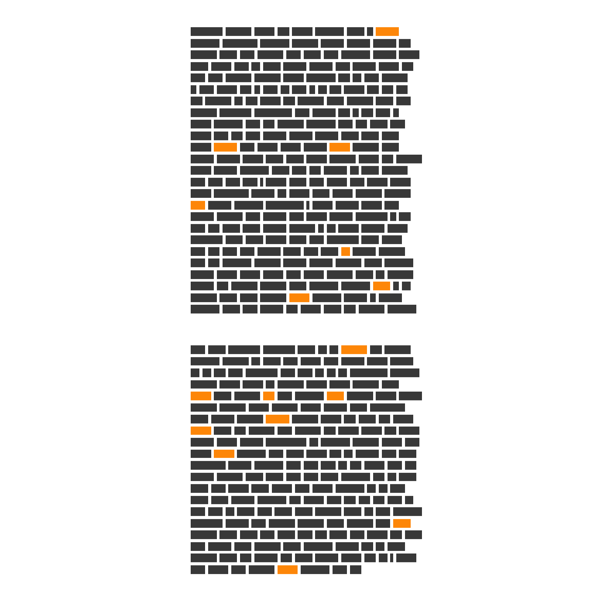
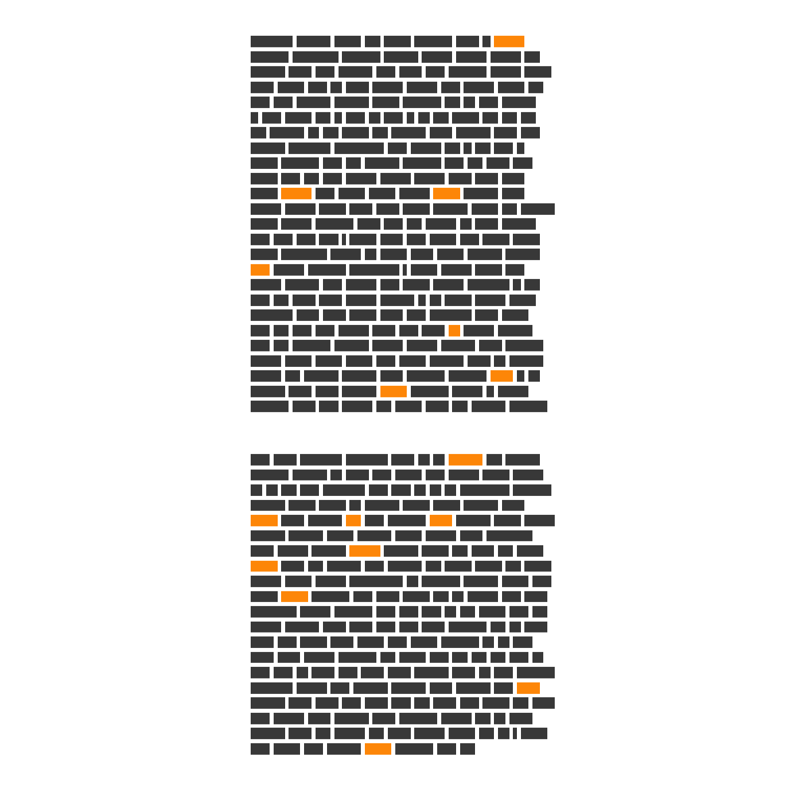

Over the past 23 years, Amazon.com has upended dozens of industries, created the world's wealthiest person, and sent city leaders scrambling to bend over backwards in pursuit of Amazon jobs.
The one-time bookseller has a
fleet of jets, maintains military contracts, and recently spent a billion dollars on televsion rights to the 'Lord of the Rings'. Their cloud computing arm powers a considerable fraction of the interet and a new venture aims to reconfigure the
health care industry. They already claim 40% of U.S. online spending, and according to some, aim to take a
slice off of all commerce. While future dominance is not assured, the companies willingness to plow profits back into a global network of distribution centers and artificial intelligence platforms means that they will be a force for some time. While Amazon suceeds in being ubiquitious, it operates out of the public eye.
In 1998's letter, Bezos put the customer in front:"We intend to build the world’s most customer-centric company." And across two decades of letters, Bezos conistently writes much more about Amazon's relationship with customers than it does with shareholders (or as he calls them from -on, "shareowners."
(a Yellow indicates a mention of customer)
For a company consumed with perfecting minute details of mail delivery and mastering cloud computing, Amazon takes the written word seriously. It started as a bookstore, after all.
High-level Amazon meetings start heads-down as managers silently read multi-page memos. Termed the
"silent start", Bezos' method gives serious weight to the written word.
"There is no way to write a six-page, narratively structured memo and not have clear thinking,” Bezos told Forbes in 2012.
To that end, what do twenty years of shareholders letters reveal about the evolution of the company? What what drives its leader? This essay utilizes text analysis and natural language processing techniques to take a structured look at the information.
From Books to Platforms and Data
You have to go back a decade to hear an honest reference to selling books. In recent years, Bezos compares the company's current efforts to it's past.
Book
Kindle
Amazon's Fire phone went down
in flames. The company wrote off $170 million and ceded the mobile hardware market to its rivals.
Phone
100 million people pay Amazon every year for fast shipping and a mishmash of other benefits as part of Amazon Prime. It's only become more prominent in Bezos' letters.
Prime
Amazon has been slowly but aggressively testing and honing a grocery delivery service, Fresh. But Bezos has not been making statements over the years, that is, until the company spent $13 billion last year to acquire Whole Foods.
Fresh
Amazon's cloud computing business, Amazon Web Services powers a mind-boggling portion of the internet, and it does it with a 25% profit. AWS subsidizes the enormously expensive retail operations and gives the larger company an unparalled ability scale and leverage their own data: customers' browsing history, past purchases, and 20 years of global sales give Amazon an unprecedentded granularity and depth of knowledge of how people buy things,
Data
AWS
The term "power vest," does not appear in the letters.
But how does Jeff feel about things?
Bezos is largely positive in the words he shares each spring. Using sentiment analyses (sentimtent dictionary from Bing et al.), we can track the broad strokes of Bezos' emotion.
He was consideribly terser in the years following the dotcom crash as the company's value in capital markets hemoragged (although its revenue continued to grow). He attaches a copy of the 1997 letter to shareholders each year.
The growth of Amazon during the last couple years (and 2017 in particular) has been stunning. As Michael Batnick wrote earlier this year, Amazon packed $304 billion dollars onto its market capitalization and has been challenging Apple to become the world's first modern
trillion-dollar company.
"Not that $300 billion in 92 days needs context, but here’s some anyway: This is more than Amazon was worth in April 2016, not even two years ago. This is bigger than every company in the S&P 500 with the exception of Apple, Google, Microsoft, Facebook, Berkshire Hathaway, JP Morgan, Johnson & Johnson, Bank of America, and Exxon Mobil. Amazon added more to its market cap in 92 days than it did in its first 5,147 days as a public company."
For a company that sells everything, what stands out year-to-year?
One method to better capture the evolution of the company and the mindset of Bezos is by finding which words appear frequently in some letters, but rarely across the corpus of text. Through a term-frequency inverse document frequency analysis
(TF-IDF), we can see what terms stand out relative to other years.
1997
- solidify
- leadership
- bookselling
1999
- platform
- profitability
- expansion
- faster
2000
- financing
- bandwidth
- living.com
2002
- superstores
- cheaper
- discounted
2003
- tenants
- negative
- abstract
- engineering
2004
- earnings
- flows
- depreciation
2005
- math
- judgment
- decisions
- quantitative
2006
- differentiated
- seeds
- culture
- planting
2007
- kindle
- book
- snacking
- reading
2008
- skills
- competencies
- sellers
- belief
2010
- data
- systems
- engineers
- forests
2011
- superstores
- cheaper
- discounted
2012
- authors
- publishing
- selling
2013
- proactively
- competitors
- proactively
2014
- prime
- marketplace
- aws
- fba
2015
- sellers
- packaging
- program
2016
- disagree
- velocity
- learning
- commit
Amazon Smiles, but Also Strikes Fear
As early as 1998's letter, Bezos put into words an ethos that aimed to delight customers from perch of an extremely competetitve and unforgiving workplace:
"I constantly remind our employees to be afraid, to wake up every morning terrified."
The most vivid depiction of corporate Amazon life came in a 2015 New York Times story in which former employee Bo Olson described a bruising workplace:"..his enduring image was watching people weep in the office, a sight other workers described as well. “You walk out of a conference room and you’ll see a grown man covering his face,” he said. “Nearly every person I worked with, I saw cry at their desk.”'
Fear-assocaited words (using the NRC lexicon) prominently appear in a few key letters. In 2016's letter, issued in the spring of 2017, Bezos addresses questions about Amazon's his long-term approach and his belief that it is still "Day 1" for Amazon.
"Day 2 is stasis. Followed by irrelevance. Followed by excruciating, painful decline. Followed by death."
Words with Fear Sentiments
This analysis shows the caveats of a simple, word-token based approach and the caution that should be used. For example, in 2013, Bezos was bullish on the release of the Amazon Fire phone. but the repeated mention name "Fire" scores more fear-sentiment entires. And Bezos' dramatic example from a video game Amazon developed contributed to a rather fear-dense portion of the same letter:
"..Earth is threatened by an alien species, the Ne’ahtu.The aliens infected Earth’s energy grid with a computer virus to disable the planet’s defenses. Before they could strike, computer science prodigy Amy Ramanujan neutralized the alien virus and saved the planet."
In 2001's letter, an extensive discussion of cash flow philosophy led to a concentration of fear-aligned terms, as the lexicon associates "cash" with fear.
Will Jeff Relent?
As the world's richest man, Bezos isn't going anywhere anytime soon. We're bound to hear more of what the internet calls
"Jeffisms". Like a more aggressive and toned Warren Buffet, Bezos' pithy managment advice has been echoing around the pages of business magazines and finance blogs for years. This analysis will leave that job to others, but it will highlight one of what appears to be Bezos' favorite turns of phrase: variations of "relentless."
1997
"We will continue to focus relentlessly on our customers."
2000
In July, as I already discussed, we added a third customer experience
pillar: relentlessly lowering prices.
Relentless commitment to long-term shareholder value
2003
In the long term,
however, relentlessly driving the “price-cost structure loop” will leave us with a stronger, more valuable
business.
2005
Our judgment is that relentlessly returning efficiency improvements and scale economies to customers in the form of lower prices
2008
We’re relentlessly focused on adding selection, both by increasing selection inside existing categories and by
adding new categories.
2009
This work has been done by a large number of smart, relentless, customer-devoted
people across all areas of the company.
***

 
